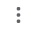

1. Get Started
Welcome! Developer of the PIGEON appreciates your choice. PIGEON (version 1.0) is a free graphics editor written in JavaScript. You can use it to draw using lines of different width with the selected color. However, much more possibilities available. For example, you can change line transparency, draw in different mods (line drawing mode, fill mode), draw shapes, etc. About full list of features you can read in the "Menu" section. Honestly, there aren't too many features, so you may ask a question: so why should I use this application? Below is an explanation.
First, about the features. Yes, there aren't too many features. But it is a new application,
only the first version. Many new features are awaiting you in the new version! Also, some features not
so easy to implement because of JavaScript's and browsers' restrictions. For example,
it is not possible to call usual Win32 "Save As" dialog window, so developer's only option is
to use the browser's "Download" dialog for this aim. So, if you want to save file in
different location than default, you should set appropriate changes in browser.
Instruction for browsers:
- In Chrome click on three vertical dots 
in top right corner of the browser. A menu will be opened. Click on Settings -> then find in left side "Advanced" ->
"Downloads", click on it. In this section you should find option "Ask where to save each file before downloading".
Turn on this option. Now you can select location on each image save.
- In Edge click on three horizontal dots in top right corner of the browser. A menu will be opened. Click on Settings ->
then find in left side "Downloads", click on it. Find an option "Ask me what to do with each download". Turn it on.
- In Opera click on logo in top left corner of the browser to open a menu. Click on Settings. Scroll to the bottom,
open "Advanced" options. Scroll until you find "Download" section with option "Ask where to save each file before
downloading". Turn it on.
- In Firefox click on button with three lines in top right corner of the browser. A menu will be opened. Click on Settings ->
find "Downloads" section with two radio buttons. You should select radio button "Always ask you where to save files".
Second, about simplicity. The tag line of the PIGEON is "Simple as the PIGEON". Some people associate word "simple" with word "primitive". But PIGEON is not primitive. It has original approach for drawing, which will be one of the most comfortable ways to draw (now non-perfect, but new versions will be better). At this moment user can freely draw on the canvas, but, if needed, new lines, shapes and text can be inserted using menu "Tools". All that user needs is to see the coordinates on the canvas using a mouse cursor or a touch (on devices with the touchscreen) and type them to appropriate in-app window from menu "Tools". Maybe now the application cannot offer too many features because of difficulties in the implementation, but using browser as a platform for running app gives one significant advantage: cross-platform support. So, if needed, this application may work on all operating systems including Windows, Linux, Android, MacOS and iOS. It is possible to draw using both a touchscreen and a mouse, so user can even use a mouse with the devices that use touchscreen. In such case message will be displayed, and a user can select draw mode: using the mouse or the touchscreen. So, this application have more features than you might think.
To run the PIGEON you should open the file "PIGEON.html" in your browser. You will start with an empty canvas below and menu above.

From this point you have such options:
1. Start drawing image. Please be sure that you use suitable for your purpose line width. You can change line width in menu File ->
Settings. Also there are other parameters, which can be changed: eraser width, alpha channels, different drawing modes, etc.
To apply changes click on the "Apply" button. Detail description is in the "Menu" section and in
the "Drawing" section.
2. Insert image and edit from menu Tools -> Insert Image. If canvas width and/or canvas height is less than
image width/height, then new canvas width and/or height will set. By default you insert an image starting from
coordinates (0, 0). You can change these values to any you like (except for invalid values, such as negative numbers).
3. Insert line/shape and edit from menu "Tools".
Some actions in the PIGEON require coordinates. The start point of the coordinate system with value (0, 0) is located in top left corner of the canvas. Horizontal axis - X, vertical axis - Y. Positive X values - to the right, positive Y values - to the down. You can get X and Y values in the menu bar on the right side from the menu. First number is X value, second number - Y value.